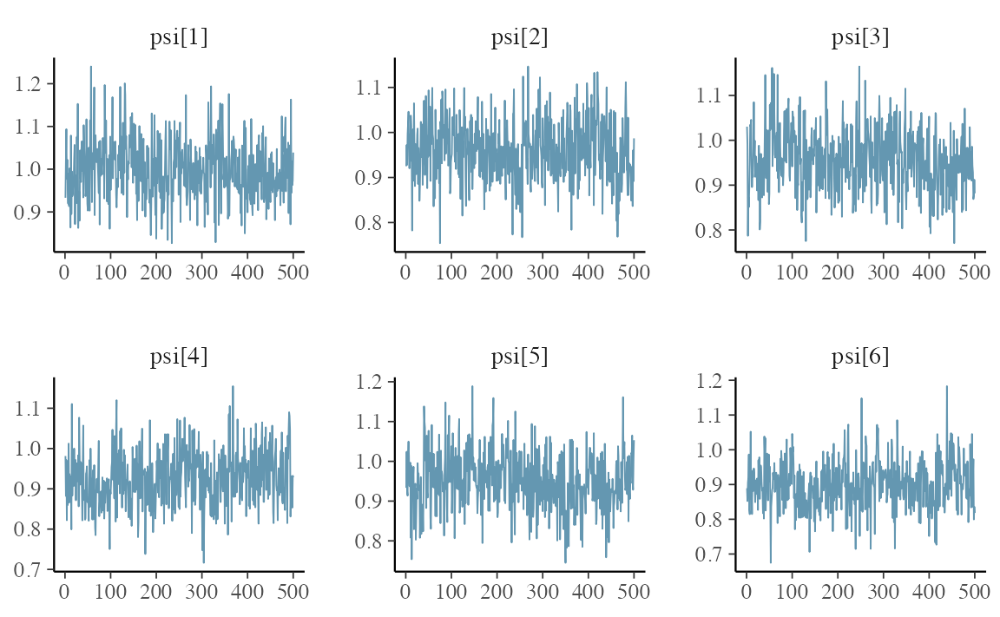
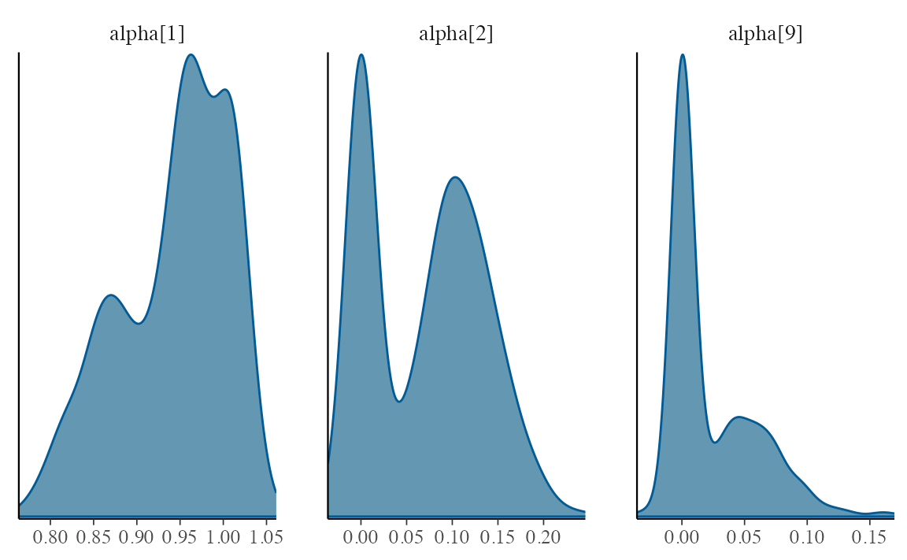

Stochastic Search Variable Selection (SSVS)
Example 1 of George et al. (2008)
VAR simulation
6 variable VAR(1) with VAR coefficient \(\mathbb{A}\):
var_coef <- matrix(0L, nrow = 7, ncol = 6)
diag(var_coef[-7,]) <- 1
# diag(var_coef[-7,]) <- .9
var_coef[7,] <- 1
var_coef
#> [,1] [,2] [,3] [,4] [,5] [,6]
#> [1,] 1 0 0 0 0 0
#> [2,] 0 1 0 0 0 0
#> [3,] 0 0 1 0 0 0
#> [4,] 0 0 0 1 0 0
#> [5,] 0 0 0 0 1 0
#> [6,] 0 0 0 0 0 1
#> [7,] 1 1 1 1 1 1and Choleksy factor \(\Psi\):
# Psi-------------------------------------
var_chol <- diag(6)
var_chol[1,2:6] <- .5
var_chol
#> [,1] [,2] [,3] [,4] [,5] [,6]
#> [1,] 1 0.5 0.5 0.5 0.5 0.5
#> [2,] 0 1.0 0.0 0.0 0.0 0.0
#> [3,] 0 0.0 1.0 0.0 0.0 0.0
#> [4,] 0 0.0 0.0 1.0 0.0 0.0
#> [5,] 0 0.0 0.0 0.0 1.0 0.0
#> [6,] 0 0.0 0.0 0.0 0.0 1.0Note that the variance matrix for simulation is \(\Sigma_e = (\Psi \Psi^\intercal)^{-1}\).
- MC simulation: 100 Samples of Size \(T =
50\).
- In this vignette, we only generate 1 sample, not MC simulation.
- This is because our goal is to show how the functions work, not reproduce the paper exactly.
- Following Appendix D.1 of Helmut (2008), we compute the square root of multivariate normal distribution variance matrix by Cholesky decomposition.
SSVS spec
set_ssvs() specifies SSVS input.
-
coef_spike: \(\tau_{0i} = 0.1\) -
coef_slab: \(\tau_{1i} = 5\)- For semi-automatic approach to \((\tau_{0i}, \tau_{1i})\), see the related work such as George et al. (2008)
-
coef_mixture: \(p_j = 0.5\)- noninformative
- equally likely to be included as excluded
-
shape: \(a_j = 0.01\) -
rate: \(b_j = 0.01\)- absence of prior information about \(\psi_{jj}\)
- make the prior noninfluential with the hyperparameters \((a_j, b_j)\) set to small values
-
chol_spike: \(\kappa_{0ij} = 0.1\) -
chol_slab: \(\kappa_{1ij} = 5\)- For semi-automatic approach to \((\kappa_{0ij}, \kappa_{1ij})\), see the related work such as George et al. (2008)
-
chol_mixture: \(q_{ij} = 0.5\)- noninformative
- equally likely to be included as excluded
As every hyperparameter has set to be the same for every \(i,j\), value can be assigned as numeric
value of length one. If you want to assign individually, you can use
vector. On the other hand, you can use upper triangular matrix for
chol_spike, chol_slab, and
chol_mixture.
Before starting MCMC, set initial values. init_ssvs()
sets initial values for each parameter. Since George et al. (2008) did
not mention how they specify the starting points, we initialize as
follows. If the initial values are set close to posterior modes, MCMC is
known to be converged fast. Since Geoge et al. (2008) has already
provides the average of posterior mean over 100 sample, we use them as
initial points.
-
init_coef: initial \(\mathbb{A}= 0_{(kp + 1) \times k}\), k = 6, p = 1 -
init_coef_dummy: initial \(\Gamma = 1_{kp \times k}\), k = 6, p = 1 -
init_chol: initial \(\Psi = 0_{k \times \times}\) k = 6 -
init_chol_dummy: initial \(\Omega =\) upper triangular matrix of which every diagonal and upper diagonal element is 1.
Luckily, the package provides automatic process for both hyperparameter specification and initial value selection.
-
choose_ssvs(y, ord, type, include_mean, gamma_param, mean_non, sd_non): A default semiautomatic approach -
init_ssvs(type = "auto"): Use OLS for coefficients and 1 for indicators.
Gibbs sampling
bvar_ssvs() performs SSVS for VAR model.
-
y: data -
p: order -
num_iter: Total number of iteration (including burn-in) -
num_burn: The number of burn-in (warm-up) -
thinning: Thinning -
bayes_spec: SSVS specification usingset_ssvs(). -
init_spec: SSVS initialization specification usinginit_ssvs(). -
include_mean: whether including the constant term in the model. -
verbose: whether to display the progress bar.
If each bayes_spec and init_spec is not
specified, corresponding automatic approach is performed.
(var_ssvs <- bvar_ssvs(
y = var_data,
p = 1,
num_iter = 1000,
num_burn = 500,
thinning = 1,
include_mean = FALSE,
verbose = FALSE
))
#> Call:
#> bvar_ssvs(y = var_data, p = 1, num_iter = 1000, num_burn = 500,
#> thinning = 1, include_mean = FALSE, verbose = FALSE)
#>
#> BVAR(1) with SSVS Prior
#> Fitted by Gibbs sampling
#> Total number of iteration: 1000
#> Number of burn-in: 500
#> ====================================================
#>
#> Parameter Record:
#> # A draws_df: 500 iterations, 1 chains, and 108 variables
#> alpha[1] alpha[2] alpha[3] alpha[4] alpha[5] alpha[6] alpha[7]
#> 1 1.01 -0.01032 0.000823 0.005289 0.003256 -4.41e-05 0.0855
#> 2 1.01 0.00306 -0.003958 0.007283 -0.006203 1.60e-03 0.0968
#> 3 1.00 0.00578 -0.004024 0.000296 -0.000731 5.73e-03 0.0740
#> 4 1.01 -0.00759 0.004900 -0.003924 -0.002697 2.63e-03 0.0740
#> 5 1.02 -0.00905 -0.002120 -0.001431 0.001932 2.01e-03 0.0768
#> 6 1.01 -0.00538 0.003921 -0.000946 0.005896 -4.18e-03 0.0909
#> 7 1.01 -0.00605 -0.003565 0.003743 0.001345 6.38e-03 0.0388
#> 8 1.02 -0.00199 -0.003802 -0.004839 -0.005370 -1.03e-03 0.0867
#> 9 1.02 0.00432 -0.002390 0.005107 0.000528 -2.27e-02 0.0568
#> 10 1.01 0.00300 -0.000486 0.006204 -0.002637 -5.88e-03 0.0893
#> alpha[8]
#> 1 0.934
#> 2 0.924
#> 3 0.920
#> 4 0.931
#> 5 0.930
#> 6 0.926
#> 7 0.971
#> 8 0.912
#> 9 0.958
#> 10 0.900
#> # ... with 490 more draws, and 100 more variables
#> # ... hidden reserved variables {'.chain', '.iteration', '.draw'}Plots for MCMC
Since each parameter element is posterior::draws_df
format, bayesplot package is applicable.
color_scheme_set("blue")
autoplot(var_ssvs, type = "trace", regex_pars = "psi")

SSVS for VHAR Model
(vhar_ssvs <- bvhar_ssvs(
y = var_data,
har = c(5, 22),
num_iter = 1000,
num_burn = 500,
thinning = 1,
include_mean = FALSE,
verbose = FALSE
))
#> Call:
#> bvhar_ssvs(y = var_data, har = c(5, 22), num_iter = 1000, num_burn = 500,
#> thinning = 1, include_mean = FALSE, verbose = FALSE)
#>
#> BVHAR with SSVS Prior
#> Fitted by Gibbs sampling
#> Total number of iteration: 1000
#> Number of burn-in: 500
#> ====================================================
#>
#> Parameter Record:
#> # A draws_df: 500 iterations, 1 chains, and 252 variables
#> phi[1] phi[2] phi[3] phi[4] phi[5] phi[6] phi[7]
#> 1 0.935 0.01226 0.00875 0.12249 -0.01183 0.00738 -0.01589
#> 2 0.860 0.00857 -0.01411 0.02716 -0.02022 0.00527 -0.00397
#> 3 0.995 0.00313 -0.00146 0.02234 -0.01628 0.01029 -0.00935
#> 4 0.861 0.00938 0.01780 0.00815 0.00585 -0.00803 0.00184
#> 5 0.973 0.00351 0.00221 0.01001 0.02041 0.00683 -0.01892
#> 6 0.822 -0.00223 -0.00649 0.00159 0.00566 -0.00883 0.01514
#> 7 0.960 0.00957 0.00203 -0.00951 0.01169 0.00155 0.02089
#> 8 0.908 0.00105 0.00272 0.07226 0.02618 -0.01376 0.06130
#> 9 0.847 -0.00192 -0.01248 0.13740 0.00533 -0.00192 0.01353
#> 10 0.933 0.00669 -0.00764 0.06753 -0.01287 0.00672 0.01113
#> phi[8]
#> 1 0.01704
#> 2 -0.01594
#> 3 0.03540
#> 4 -0.05157
#> 5 0.02760
#> 6 0.05536
#> 7 -0.00459
#> 8 0.01702
#> 9 -0.03166
#> 10 0.01266
#> # ... with 490 more draws, and 244 more variables
#> # ... hidden reserved variables {'.chain', '.iteration', '.draw'}